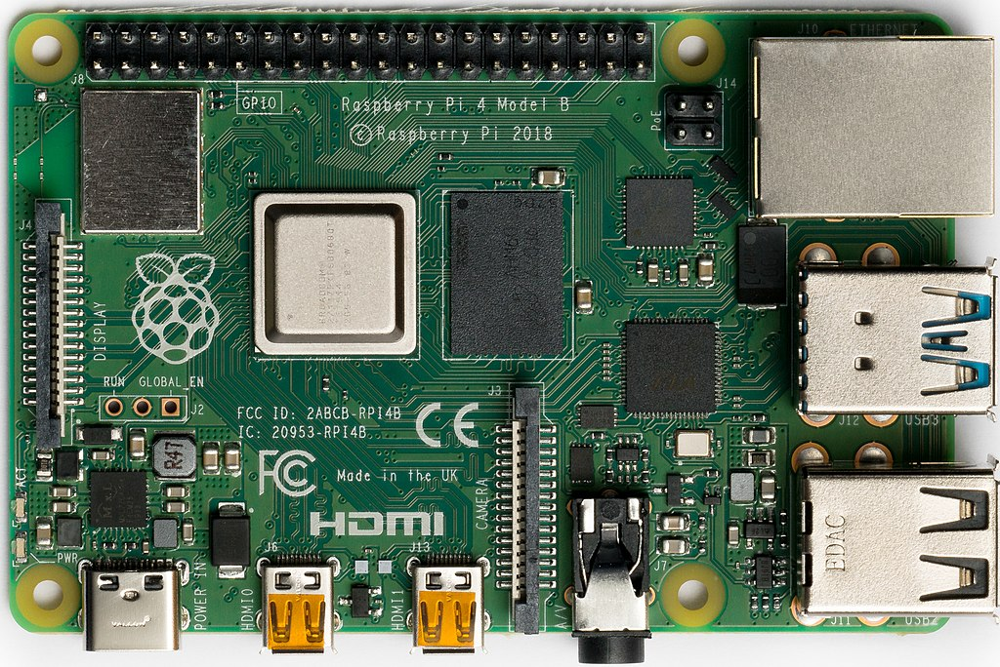

Raspberry Pie

Description
Choosing your Raspberry Pie is not easy. There are three main versions and several variations:
- Raspberry Pie - can't go wrong with this classic
- Raspberry Pie Zero - sugar free pie
- Raspberry Pie Pico - perfect pie to throw at someone
Dating back to 2012, when the first Raspberry Pie was served. Since then, a lot of improvements were made. So today we make the Raspberry Pie 4 Model B.
Ingredients
- 1.5 GHz 64-bit quad core ARM Cortex-A72 processor
- 1 on-board 802.11ac Wi-Fi
- 8GB LPDDR4-3200 SDRAM
- 5.0 GHz IEEE 802.11ac wireless
- 5.0 Bluetooth
- 1 BLE Gigabit Ethernet
- 2 USB 3.0 ports
- 2 USB 2.0 ports
- 40 pin GPIO header (Raspberry Pi standard)
- 2 micro-HDMI ports/li>
- 2-lane MIPI DSI display port
- 2-lane MIPI CSI camera port
- 4-pole stereo audio and composite video port
- H.265 (4kp60 decode)
- H264 (1080p60 decode, 1080p30 encode)
- 3.1 OpenGL ES
- 1.0 Vulkan
- 1 Micro-SD card slot for loading operating system and data storage
- 5V DC via USB-C connector (minimum 3A*)
- 5V DC via GPIO header (minimum 3A*)
- 1 Power over Ethernet (PoE) enabled (requires separate PoE HAT)
- 1 tube liquid metal or ink
- 1 can whipped cream
* A good quality 2.5A power supply can be used if downstream USB peripherals consume less than 500mA in total.
Steps
- Set operating temperature between 0 – 50 degrees C ambient
- Place all required components on the counter
- To prepare the printed circuit board, push ink or liquid metal through the template to create the pattern. Unfortunately you simply can't do that by hand.
- Pick up most of the individual components and place them on to the Raspberry Pie board
- When you've done that for all the components, place the pie in the oven for 50 seconds. Keep your eye on the pie while the solder and components melts on to the board
- Take out the pie from the oven and test the built-in Wi-Fi by connecting it to your router.
- Garnish pie or individual servings with whipped cream. Store in refrigerator.